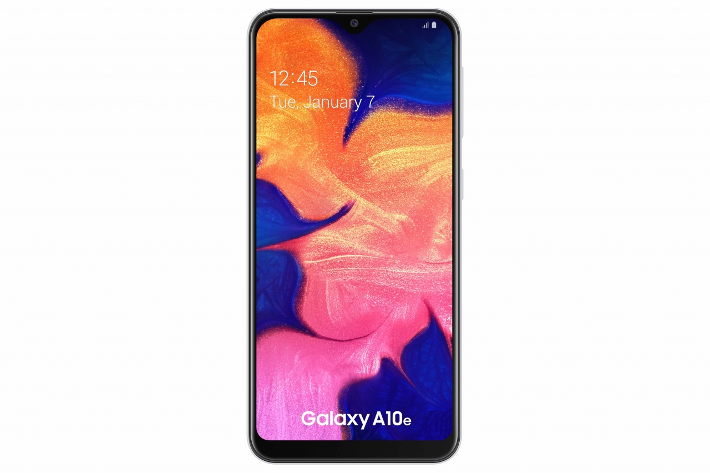

스마트폰
스마트폰은 컴퓨터를 결합한 무선 휴대전화기이다. PC에서 실행되는 운영체제보다 작게 만든 모바일 운영체제를 탑재하여
인터넷 검색, 전자우편, 간단한 문서 편집, 카메라, 오디오 및 비디오 재생 등 PC의 기능을 거의 모두 갖추고 있다.
최초의 스마트폰은 사이먼(Symon)으로 추정된다. IBM사가 1992년에 설계하여 그 해에 미국 네바다 주의 라스베이거스에서 열린 컴댁스에서 컨셉 제품으로 전시되었다.
안드로이드(영어: Android)는 스마트폰, 태블릿 PC 같은 터치스크린 모바일 장치 용으로 디자인된 운영 체제이자 수정된 리눅스 커널 버전을 비롯한 오픈 소스 소프트웨어에 기반을 둔 모바일
운영 체제다.
아이폰(영어 : iphone)은 2007년 1월 9일, 애플이 발표한 휴대 전화 시리즈이다. 미국 샌프란시스코에서 열린 맥월드 2007에서
애플의 창업자 중 한명인 스티브 잡스가 발표했다.
샘플
| 스마트폰 샘플 |
|

|

|